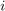
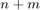
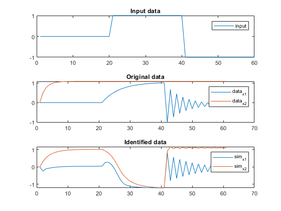
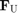
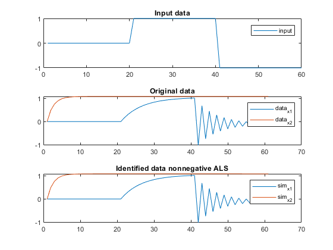
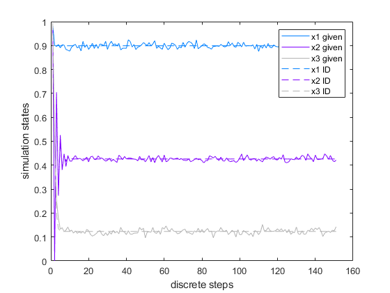

mlgreyest
grey box parameter estimation for MTI models with an ALS algorithm
Contents
Syntax
[sys,J] = mlgreyest(data,r)
[sys,J] = mlgreyest(data,1,structuralRestrictions)
[sys,J] = mlgreyest(data,r, options)
Description
Use mlgreyest to perform rank n parameter identification with normalized MTI models in CPN1 format or MTI models given as an otvlTens-object from iddata object with input-output data in time-domain. Function returns model with estimated parameters and the final estimation cost.
Identification is performed with an Alternating Least Squares algorithm (ALS). The ALS is already widely used for the factorisation of matrices (Krzanowski 1988) and has been adapted to the decomposition of CP tensors (Kolda und Bader 2009) and to the tensor train decomposition in (Batselier 2020). It can also be applied for parameter estimation of multilinear models.
[sys,J] = mlgreyest(data,r) identifies a multilinear Model of rank r in 1-norm CPN representation with default options
[sys,J] = mlgreyest(data,1,structuralRestrictions) identifies a multilinear model whose equation structure is given as an otvlTens object
[sys,J] = mlgreyest(data,r, options) identifies a multilinear model with custom options
Input arguments
data measurement iddata object r rank structuralRestrictions otvlTens object [optional]
Output arguments
sys mss object J cost function result
ALS for low-rank 1-norm MTI models
Consider the discrete-time multilinear state equation
 ,
,
with ![$z_i(k), z_j(k)\in\mathbf{z} = [x_1(k),x_2(k),...x_n(k),u_1(k),u_2(k),...,u_m(k)]$](mlgreyestDoc_eq12614388370685719119.png) . The factor matrices
. The factor matrices  with
with  and
and  with
with  have the dimensions
have the dimensions  and are normalized to the
and are normalized to the  -norm, see also [1].
-norm, see also [1].
If is the matrix with free parameters and all other matrices are fixed to a number, the equation of state can be expressed as a linear equation and solved by standard linear regression methods.
With an alternating change of the free parameter dimension  through all  dimensions, the cost function value

decreases until the specified cancellation criterion is met.
Example parameter estimation norm-1 MTI
A system is given in CPN1 format with:


% Create a discrete-time MTI model F.U = [[0.83, 0]; [0, 0.53]; [1, 0]]; F.phi= [[1.0080, 0]; [0, 1.040]]; Ts=1; sys=mss(CPN1(F.U,F.phi),Ts); % Create state data from MTI u=[zeros(20,1);ones(20,1);-ones(20,1)]; %input x0=[0;0]; %initial condition xsim=msim(sys,u,length(u), x0);
The state data can be identified as an MTI model with a freely chosen rank r. Default identification algorithm is ALS.
% Use ALS for identification data=iddata(xsim(1:end-1,:),u); %create iddata object from state data r=4; sysId=mlgreyest(data,r); Fu = sysId.F.U Fphi = sysId.F.phi xsimId=msim(sysId,u,length(u), x0);
Identification finished: number of iterations: 200, final cost: 12.0478
Fu =
0.1897 0.7166 0.5774 0.3213
0.4108 0.4869 0.4417 0.2082
0.3041 -0.9412 -0.9871 0.7178
Fphi =
2.2832 5.7649 -10.6209 -6.7332
4.1736 6.0868 -9.7241 -7.3089
% Compare given and identified data tiledlayout(3,1); nexttile plot(u); title('Input data') legend('input') nexttile plot(xsim); title('Original data') legend('data_{x1}','data_{x2}') nexttile plot(xsimId); title('Identified data') legend('sim_{x1}','sim_{x2}')
Example nonnegative parameter estimation norm-1 MTI
The estimated parameters  might be required to be nonnegative. This can be achieved by using the Nonnegative option of mlgreyest.
% Use nonnegative ALS for identification sysIdNonneg=mlgreyest(data,r,"Nonnegative",true); Fu = sysIdNonneg.F.U Fphi = sysIdNonneg.F.phi xsimNonneg=msim(sysIdNonneg,u,length(u), x0);
Identification finished: number of iterations: 3, final cost: 0.015247
Fu =
0.1135 0.1597 0.5202 0.9791
0.6513 1.0000 0.6845 0
0.4834 0.7861 0.2958 0.8411
Fphi =
0.3053 0.1220 -0.4892 1.0711
3.3821 -2.0494 -0.4165 0.1848
% Compare given and identified data tiledlayout(3,1); nexttile plot(u); title('Input data') legend('input') nexttile plot(xsim); title('Original data') legend('data_{x1}','data_{x2}') nexttile plot(xsimNonneg); title('Identified data nonnegative ALS') legend('sim_{x1}','sim_{x2}')
Example parameter estimation MTI with otvlTens structure
Parameter estimation can also be performed for mss with a multilinear structure given by an otvlTens-object.
A multilinear systems state equations are given by
![$$
\left(\begin{array}{c}
x_1(k+1) \\
x_2(k+1) \\
x_3(k+1)
\end{array}\right) = \left(\begin{array}{c}
c_1\\
\phi_1 \left(a_{21} -x_1 \left(k\right)\right)\left(a_{22} -x_2
\left(k\right)\right)\left(x_3 \left(k\right)+a_{13} \right)+\phi_2
\left(x_1 \left(k\right)+a_{11} \right)\left(a_{22} -x_2 \left(k\right)\right)+\phi_3 \left(a_{21} -x_1 \left(k\right)\right)\left(x_2 \left(k\right)+a_{12} \right)\left(a_{23} -x_3 \left(k\right)\right)+c_2\\
\phi_4 \left(a_{21} -x_1 \left(k\right)\right)\left(a_{23} -x_3 \left(k\right)\right)+\phi_5 \left(x_1 \left(k\right)+a_{11} \right)\left(x_3 \left(k\right)+a_{23} \right)+c_3
\end{array}\right)
$$](mlgreyestDoc_eq01178479854557584779.png)
Those equations can be represented in an otvlTens-object:
%create OTVL structures for state equations myTvlStruct1 = false(0,0,2); myTvlStruct1(:,:,1) = zeros(0,3); %position of dont cares myTvlStruct1(:,:,2) = zeros(0,3); %Boolean values myTvlStruct2 = false(3,3,2); myTvlStruct2(:,:,1) = [0 0 0; 0 0 1; 0 0 0]; %position of dont cares myTvlStruct2(:,:,2) = [0 0 1; 1 0 0; 0 1 0]; %Boolean values myTvlStruct3 = false(2,3,2); myTvlStruct3(:,:,1) = [0 1 0; 0 1 0]; %position of dont cares myTvlStruct3(:,:,2) = [0 0 0; 1 0 1]; %Boolean values %create OTVLs myOTvl1 = otvl(myTvlStruct1); myOTvl2 = otvl(myTvlStruct2); myOTvl3 = otvl(myTvlStruct3);
An otvlTens-object with unknown parameters can be created by initializing the parameter matrices 'FPhi', 'Fa' and 'Fc' as 0-by-0 arrays.
% create otvlTens
oTens = otvlTens([], [], [], myOTvl1, myOTvl2, myOTvl3);
Perform parameter esimation for MTI with otvlTens structure:
load("xDataNoisy.mat") rank = 1; [sysID, costID] = mlgreyest(xDataNoisy,rank,oTens,"Focus","prediction", "Display","on");
Warning: Rank limitation is currently only implemented through the strucutral restrictions Identification finished: number of iterations: 199, number of initializations: 1, final cost: 0.23785

%simulation of identified model timestep = 1; tEnd = 150; omssID = mss(sysID, timestep); simID = msim(omssID, [],1:tEnd, xDataNoisy.y(1,:)); %compare given and identified results newcolors = [0 0.5 1; 0.5 0 1; 0.7 0.7 0.7]; figure() colororder(newcolors) plot(1:length(xDataNoisy.y), xDataNoisy.y,1:tEnd+1,simID, '--') xlabel('discrete steps') ylabel('simulation states') legend('x1 given', 'x2 given', 'x3 given', 'x1 ID', 'x2 ID', 'x3 ID');
Warning: Warning: inputCount is fixed to zero, as only autonomous systems are implented currently
Options
Supported options for general mss-object:
Initialize
Handling of initial parameters (F0) during estimation. Specify as one of the following: 'random': F0 is initialized random. Default. 'estimate': Initial parameters are estimated with global optimization algorithm. Not supported for alternating linear scheme algorithm
Display
View estimation progress ('on'/'off'). Default: 'off'.
Normtype
spezifies the normalization typ of the mti cpn object. Default: "1-norm"
Method
The method for the optimization in set here. 'als': for altenating linear scheme optimization 'fmincon': for general nonlinear optimization using the interior point algorithm 'lsqnonlin': for nonlinear least squares optimization. Default: 'als'
Nonnegative
set to 'true' to perform nonnegative parameter estimation with ALS algorithm. Default: 'false'
AlsTolerance
criteria to terminate the alternating linear scheme optimization if the value in AlsTolerance is reached. Default: 1
AlsIterations
criteria to terminate the alternating linear scheme optimization if themaximum number of iterations is reached. Default: 200
MaxFunctionNonlin
maximal number of function evaluation in nonlinear optimization. Default: 1000000
Supported options for mss-object with structure given by otvlTens-object:
Initialize
Handling of initial parameters (FPhi, Fa, Fc) during estimation. Specify as one of the following: 'random': parameters are initialized random. Default. 'none': parameters are initialized by ones and zeros preserving the structure contained in the otvlTens object 'user': parameters are read from the otvlTens object
Display
View estimation progress ('on'/'off'). Default: 'off'.
AlsTolerance
Criteria to terminate the alternating linear scheme optimization if the value in AlsTolerance is reached. Default: 1
AlsIterations
criteria to terminate the alternating linear scheme optimization if themaximum number of iterations is reached. Default: 200
References
[1] N. Jöres et al. "Reduced CP representation of multilinear models" in Proceedings of the 12th International Conference on Simulation and Modeling Methodologies, Technologies and Applications, 2022.